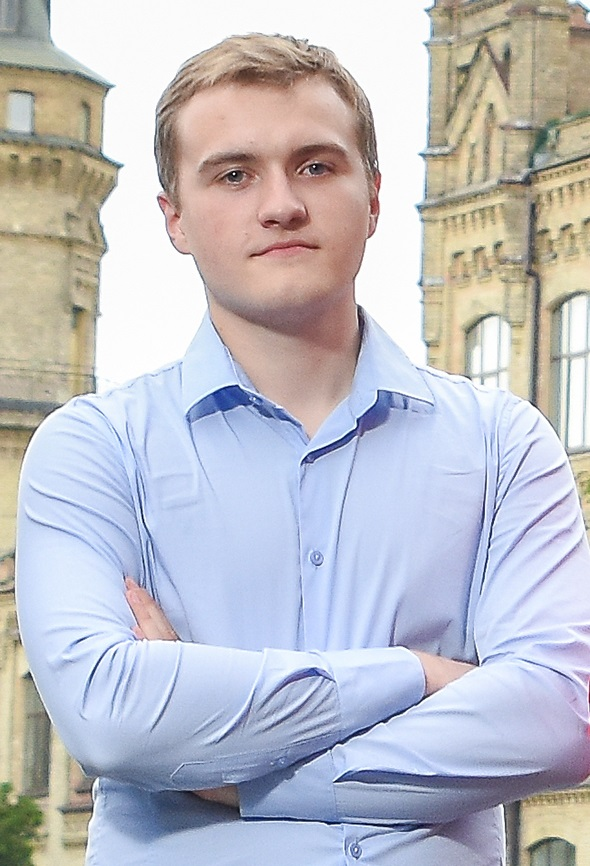

CV укр
Назад
Головна
Yevhenii Hura
Front-end Developer

Contacts
Adress - Kyiv Oblast, Vyshneve
Phone
+380637133537
E-mail
eugenegura@gmail.com
Telegram
YevheniiHura
Instagram
yevheniihura
Education
Igor Sikorsky Kyiv Polytechnic Institute
Bachelor. 2014-2018.
"Business Administration And Management".
Master. 2018-2020.
"Logistics Management".
Work History
McDonald's Ukraine LTD
Training instructor. 2017-2018.
Responsibilities:
- was responsible for training of the new crew members;
- summarized the financial results of the working day;
- prepared month and annual financial reports;
- employees' knowledge certification;
- communicated with guests and resolved conflict situation.
TM "ViYar"
International Logistics Manager. 2018 - present
Responsibilities:
- delived the raw materials and goods from Europe to Ukraine;
- controlled the process of shipment from manufacture to customers within Ukraine and abroad;
- organized the passengers transportation within the company needs;
- was in charge of the "ViYar's local delivery" project;
Skills